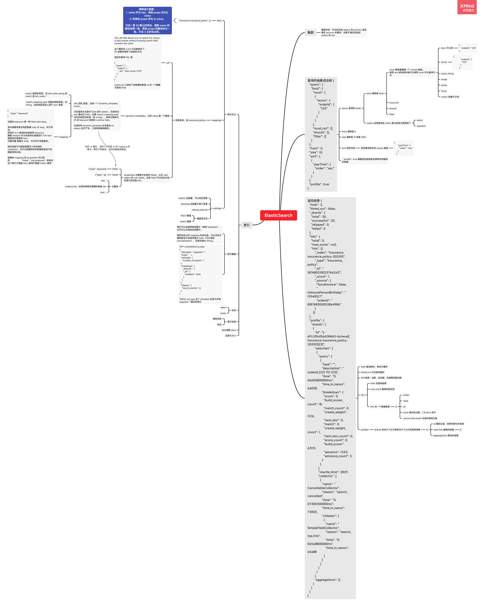
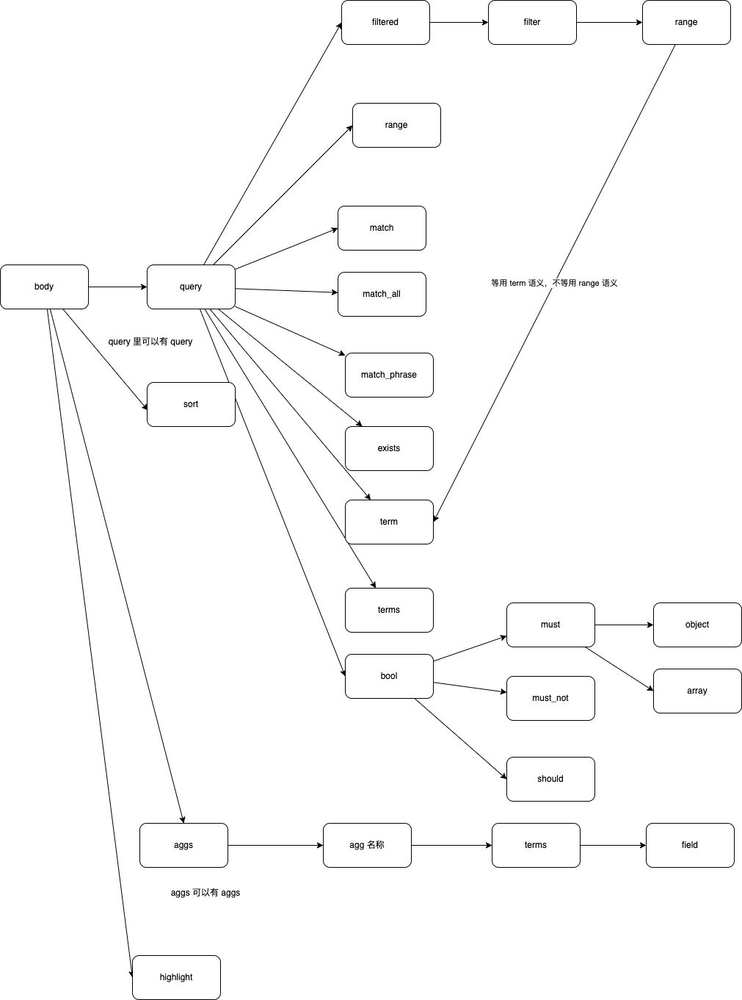
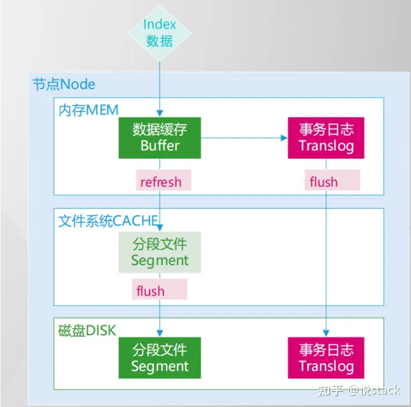

ElasticSearch 总结
ES 思维导图

ES 的定位
- ES 是 build on top of Lucene 建立的可以集群化部署的搜素引擎。
ES 可以是 document store（此处可以理解为文档仓库或者文档存储），可以结构化解决数据仓库存储的问题。在 es 中一切皆对象，使用对象对数据建模可以很好地处理万事万物的关系。
ES 是海量数据的分析工具能够支持：搜索、分析和实时统计。
ES 的架构有优越的地方：
- 自己使用 pacifica 协议，写入完成就达成共识。
- 节点对内对外都可以使用 RESTful API（or json over http）来通信，易于调试。
- 因为它有很多很好的默认值，所以开箱即用。
- 它天生就是分布式的，可以自己管理多节点。
ES 的架构
ES 是基于 Lucene 的，集群上的每个 node 都有一个 Lucene 的实例。而 Lucene 本身是没有 type 的，所以 ES 最终也去掉了 type。
ES 中每个节点自己都能充当其他节点的 proxy，每个节点都可以成为 primary。用户需要设计拓扑的时候只需要关注种子节点和 initial master 即可。
ES 中的搜索
全文搜索
按照《全文搜索》中的例子，使用 match 总会触发全文搜索。因为在Elasticsearch中，每一个字段的数据都是默认被索引的。也就是说，每个字段专门有一个反向索引用于快速检索。想不要做索引需要对任意的 properties 使用 "index": "not_analyzed"。
精确（短语）搜索
精确查询的方法有：
短语查询：
1 | |
这种查询可以查出rock climbing和a rock climbing。
term 查询（这种查询是客户端查询里最常用的）：
1 | |
这种查询可以查出rock climbing，不可以查出a rock climbing。
另一种 phrase 查询：
1 | |
精确和不精确查询有好几种方法，详见《elasticsearch 查询（match和term）》 和《finding_exact_values》。
注意，es 的查询可以有很多的变种：
1 | |

search api 的搜索
参考《空查询》。
倒排索引简析
倒排索引的 key 是 term，value 是文档的指针，可以参考这个《倒排索引》文档。
过滤机制
头机制
x-pack
version 机制
容量与分片
为何分片不宜过大？
- 增加索引读压力-不利于并行查询。
- 不利于集群扩缩容（分片迁移耗费较长时间）
- 集群发生故障时，恢复时间较长
类似的问题也会发生在 Redis 之类的架构方案里。
解决大分片的方法
- 索引按月、日进行分割。
- delete_by_query 方法删除索引对索引进行缩容。
- 模板增加主分片数量-存疑，通常只能增加副本数，而无法改变切片比例。
- 扩容数据节点。
- 减小单位分片大小。
一个可实操的方案：
- 修改写入逻辑和 mapping，让新写入的 doc 的 field 变少。
- 对老的索引进行 delete_by_query。
常用查询段
- aggs
- match
- 等于分词以后的 or 查询，依赖于 analyzer。“hello world”如果被分词为 hello 和 world，则类似
term = hello or term = wolrd。
- 等于分词以后的 or 查询，依赖于 analyzer。“hello world”如果被分词为 hello 和 world，则类似
- match_phrase
- term 出现在一个句子中，句子包含 term，依赖于 analyzer。类似
contains("hello world")
- term 出现在一个句子中，句子包含 term，依赖于 analyzer。类似
- page：
- range：是大于等于小于的意思，不是 from 和 size
- search_after
- term
- term 等于句子。类似
term="hello world"
- term 等于句子。类似
- terms：term 的数组形式，类似
in。 - wildcard：
- 允许指定匹配的正则式。它使用标准的 shell 通配符查询：? 匹配任意字符，* 匹配 0 或多个字符。
写入流程
